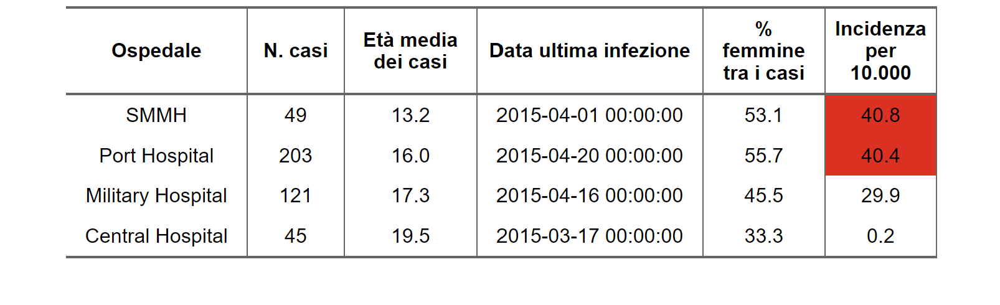

## Programmi Statistici - MEPI
## Autore: Alberto Mateo Urdiales
## Obiettivo: Analisi dei dati di un focolaio di Ebola
## Contatto: alberto.mateourdiales@iss.it
## Data ultimo aggiornamento: 21 gennaio 2025
# SESSIONE 1 --------------------------------------------------------------
## 4.2. Installarere e caricare i pacchetti necessari -------------------------
# installa (se necessario) da CRAN e carica i pacchetti da utilizzare
pacman::p_load(
rio, # importazione dati
skimr, # ottieni panoramica dei dati
janitor, # pulizia dati e tabelle
lubridate, # lavorare con le date
epikit, # per creare categorie di età
gtsummary, # statistiche riassuntive, test e regressioni
tidyverse # gestione e visualizzazione dati
)
## 4.3. Leggere i dati -----------------------------------------------------
# leggere i dati di Ebola
casi_ebola_grezzo <- import("data/linelist_raw.xlsx")
## 4.4. Esplorare il database ---------------------------------------------------
# esplorare tutto il database con skimr
skim(casi_ebola_grezzo)
# esplorare categorie di una variabile "character" o "factor"
tabyl(casi_ebola_grezzo, gender)
tabyl(casi_ebola_grezzo, hospital)
tabyl(casi_ebola_grezzo, fever)
# SESSIONE 2 --------------------------------------------------------------
## Pulizia dei dati --------------------------------------------------------
#vederei nomi delle colonne
names(casi_ebola_grezzo)
casi_ebola_pul <- casi_ebola_grezzo %>%
#rinomina automaticamente tutte le colonne
clean_names() %>%
#rinomina manualmente
rename(
#NUOVO_NOME = VECCHIO_NOME
date_hosp = hosp_date,
date_infection = infection_date
) %>%
select(-merged_header, -x28) %>% #rimuove queste colonne
#funzioni come starts_with() o everything() o contains() (non utilizzata qua)
#sono funzioni che ci rendono la vita molto più facile
select(case_id, starts_with("date"), everything()) %>%
#4.1. creazione di una colonna con un valore: Ebola
mutate(malattia = "Ebola") %>%
#4.2. modifichiamo age per convertirla in numerica
mutate(age = as.numeric(age)) %>%
#4.2. ricodificare gender
mutate(gender = recode(gender,
"m" = "maschi",
"f" = "femmine")) %>%
#4.2. ricodificare hospital
mutate(hospital = recode(hospital,
"Central Hopital" = "Central Hospital",
"Military Hopital" = "Military Hospital",
"Mitylira Hopital" = "Military Hospital",
"Mitylira Hospital" = "Military Hospital",
"Port Hopital" = "Port Hospital",
"St. Mark's Maternity Hospital (SMMH)" = "SMMH",
"St. Marks Maternity Hopital (SMMH)" = "SMMH"
)) %>%
#4.3. ricodifica logica per stato_caso
mutate(stato_caso = case_when(
ct_blood < 20 ~ "confermato",
!is.na(source) & fever == "yes" ~ "sospetto",
TRUE ~ "sotto_indagine"
)) %>%
#4.3. ricodifica logica di età
mutate(eta_anni = case_when(
age_unit == "years" ~ age,
is.na(age_unit) ~ age,
age_unit == "months" ~ age/12
)) %>%
filter(!is.na(case_id) & stato_caso == "confermato" & date_infection >= "2014-01-01")
Master II livello Epidemiologia - Programmi Statistici
Sessione 3 - Raggruppare, linkare dati e creare tabelle:
Obiettivi di questa sesione
- imparare a raggruppare dati e creare tabelle in R,
- essere in grado di collegare diversi database
- acquisire conoscenze su come formattare una tabella ed esportarla
Preparazione
In questo esercizio continueremo a lavorare sullo script analisi_ebola.R che abbiamo sviluppato nelle ultime due lezioni.
Prima di cominciare, assicurati di:
Avere RStudio aperto con il progetto materiale_R.
Aprire lo script analisi_ebola
Pulire l’Environment
Far correre lo script e assicurarti che tutto funzioni bene
Se pensi che il tuo script a questo punto sia incompleto o hai dubbi, puoi confrontarlo con il codice che si trova qui sotto. Il tuo script dovrebbe essere simile.
Clicca per vedere lo script
Step 1: Prepara lo script per l’analisi
Compiti:
Comincia per:
- Aggiungere una nuova sezione al tuo script. La puoi chiamare “Tabelle” (per esempio)
- Oggi useremo due pacchetti che non abbiamo usato prima: {flextable} e {scales}. Aggiungi questi due pacchetti al comando
pacman::p_load()che hai all’inizio del tuo script
Clicca per leggere un suggerimento
Ricorda che uno script di R dovrebbe essere uno script che funziona dall’altro verso il basso in un ambiente pulito. Per questo motivo, è importante includere nell’intero script solo un comando pacman::p_load(), che dovrebbe essere situato all’inizio dello script. I nuovi pacchetti devono essere aggiunti a questo comando e non a uno separato.
Clicca per vedere la soluzione (provaci da solo prima!)
Commando pacman all’inizio dello script
# installa (se necessario) da CRAN e carica i pacchetti da utilizzare
pacman::p_load(
rio, # importazione dati
skimr, # ottieni panoramica dei dati
janitor, # pulizia dati e tabelle
lubridate, # lavorare con le date
epikit, # per creare categorie di età
flextable, # per formattare tabelle
scales, # per mostrare percentuale nelle tabelle
gtsummary, # statistiche riassuntive, test e regressioni
tidyverse # gestione e visualizzazione dati
)La nuova sezione in fondo allo script
## Tabelle --------------------------------------------------------Step 2: Aggregare casi per ospedale
In R ci sono diversi approcci per creare tabelle. Abbiamo visto in precedenza come la funzine tabyl() dal pacchetto {janitor} può essere molto utile per fare tabelle veloci che ci aiutano nella fase di esplorazione dei dati.
Adesso useremo l’approccio di {dplyr} con le funzioni group_by() e summarise(). Questo approccio permette una maggior flessibilità ed è il più usato in epidemiologia.
2.1. Numero di casi per ospedale
Compito:
- Utilizzando
group_by()esummarise(), crea un oggetto chiamato casi_ospedale con il numero di casi di ebola per ospedale
Clicca per leggere un suggerimento
La prima cosa da fare è scrivere il nome del nostro nuovo oggetto (casi_ospedale) e assegnarlo al database pulito: casi_ebola_pul utilizzando l’operatore di assegnazione <-. Successivamente, dobbiamo aggiungere la funzione group_by() in una nuova riga, assicurandoci che questa funzione sia collegata alla riga precedente tramite l’operatore pipe %>%. La funzione group_by() serve per indicare la variabile in base alla quale vogliamo aggregare i dati. In questo caso, vogliamo aggregare i dati per ospedale, quindi, dobbiamo scrivere questa variabile all’interno della funzione. Se desideriamo aggregare per più di una variabile, possiamo elencarle separandole con una virgola.
Infine, la funzione summarise() serve per specificare cosa vogliamo calcolare nell’aggregazione dei dati. Questa funzione a una sintassi simile a quella di mutate(), quindi all’interno dobbiamo scrivere il nome della nuova variabile (ad es., n_casi) e la funzione che determina la nuova variabile separati dal simbolo =. Poiché adesso vogliamo soltanto il numero di casi, la funzione che ci serve sarebbe n().
Clicca per vedere la soluzione (provaci da solo prima!)
casi_ospedale <- casi_ebola_pul %>%
group_by(hospital) %>% #raggruppamento per la variabile hospital
summarise(n_casi = n(), #questa riga crea la nuova variabile con il numero di casi
.groups = "drop") #è buona praxis rimuovere raggruppamento alla fine
#per vedere il risultato
casi_ospedale| hospital | n_casi |
|---|---|
| Central Hospital | 45 |
| Military Hospital | 121 |
| Other | 97 |
| Port Hospital | 203 |
| SMMH | 49 |
| NA | 194 |
2.2. Aggiungere altre variabili all’aggregazione
Come abbiamo detto prima, uno dei vantaggi dell’approccio group_by() e summarise() per creare tabelle e aggregare i dati è la sua flessibilità. Con questo approccio possiamo creare all’interno di summarise() diverse variabili definite per diverse funzioni.
Compiti:
Modifica il codice che abbiamo utilizzato per creare l’oggetto casi_ospedale aggiungendo:
- Una variabile con la media dell’età per ospedale (per calcolare la media usa la variabile eta_anni)
- Una variabile con la data di infezione più recente per ospedale
- Una variabile con il numero di femmine per ospedale
- Una variabile con la percentuale di casi che sono femmine per ospedale
Clicca per leggere un suggerimento
Per creare queste variabili dovremmo usare funzioni di {base} come mean() per la media, max() per rilevare l’ultima data di infezione e sum() per calcolare il numero di casi che hanno una caratteristica specifica (ad es., essere femmina). Per queste funzioni c’è un avvertimento che dobbiamo sapere. Se dentro di una variabile esiste uno o più dati mancanti, cioè NA, la funzione non ritornerà NA come risultato invece della media, la somma o il massimo.
Ad esempio, qua la funzione sum() ci da il risultato della somma di queste tre numeri
sum(2, 5, 3)[1] 10Ma, se aggiungiamo un NA il risultato diventa NA perché R non sa come gestire i valori mancanti
sum(2, 5, 3, NA)[1] NADobbiamo, allora, utilizzare un argomento per dire a R di ignorare questi valori. Questo argomento è na.rm = TRUE
sum(2, 5, 3, NA, na.rm = TRUE)[1] 10Vediamo adesso come introdurre questo argomento cambia il risultato della media nel database che stiamo usando
mean(casi_ebola_pul$eta_anni)[1] NAmean(casi_ebola_pul$eta_anni, na.rm = TRUE)[1] 16.0156Un ultimo consiglio. Per rendere una eventuale tabella più leggibile, possiamo ridurre il numero di decimali che si mostra in ogni colonna. Questo si fa con la funzione round(). All’interno della funzione dobbiamo usare l’argomento digits = per indicare il numero di decimali che vogliamo (ad esempio 0 o 1). Vedi l’esempio di seguito:
round(mean(casi_ebola_pul$eta_anni, na.rm = TRUE), digits = 2)[1] 16.02
Clicca per vedere la soluzione (provaci da solo prima!)
casi_ospedale <- casi_ebola_pul %>%
group_by(hospital) %>% #raggruppamento per la variabile hospital
summarise(n_casi = n(),
media_eta = round(mean(eta_anni, na.rm = TRUE), digits = 1),
ult_infez = max(date_infection, na.rm = TRUE),
n_fem = sum(gender == "femmine", na.rm = TRUE),
perc_fem = round(n_fem/n_casi*100, digits = 1),
.groups = "drop") #è buona praxis rimuovere raggruppamento alla fine
#per vedere il risultato
casi_ospedale| hospital | n_casi | media_eta | ult_infez | n_fem | perc_fem |
|---|---|---|---|---|---|
| Central Hospital | 45 | 19.5 | 2015-03-17 | 15 | 33.3 |
| Military Hospital | 121 | 17.3 | 2015-04-16 | 55 | 45.5 |
| Other | 97 | 15.6 | 2015-04-14 | 48 | 49.5 |
| Port Hospital | 203 | 16.0 | 2015-04-20 | 113 | 55.7 |
| SMMH | 49 | 13.2 | 2015-04-01 | 26 | 53.1 |
| NA | 194 | 15.3 | 2015-04-22 | 97 | 50.0 |
Step 3: Creare una tabella con dati del focolaio di Ebola per ospedale
Immagina di lavorare come epidemiologo durante il focolaio di Ebola e ti venga richiesto di preparare una tabella che sintetizzi le informazioni più importanti del focolaio per ospedale, da includere nel rapporto della situazione (sitrep). Decidi di includere nella tabella:
- Il numero di casi per ospedale
- L’età media dei casi
- La data dell’ultima infezione
- La percentuale di femmine
- L’incidenza per 10.000 abitanti
Non possiamo calcolare l’incidenza perché non abbiamo il denominatore (catchment population di ogni ospedale). Quindi, dobbiamo linkare i nostri dati con un database che contiene il denominatore di cui abbiamo bisogno. I passaggi per fare questo processo sono:
- Importare i dati degli ospedali
- Pulire, se necessario, questo database
- Linkare entrambi databases
3.1. Importare informazioni degli ospedali
Compito:
- Importa il file: hosp_info.RDS che si trova all’interno della sottocartella data. Questo database contiene il denominatore di ogni ospedale. Assegna a questo database il nome: osp_info
Clicca per leggere un suggerimento
Anche qua rimane importante mantere lo script sistemato. Per questa ragione in tutto lo script ci dovrebbe essere soltanto una sezione dove si importano i dati (in questo caso i dati individuali di Ebola e il database con le informazioni per ospedale).
Se non ricordi come importare i dati, leggi la sezione 4.3. Leggere i dati della sessione 1. Oppure consulta il capitolo Import and Export di EpiRhandbook.
Clicca per vedere la soluzione (provaci da solo prima!)
osp_info <- import("data/hosp_info.RDS")Quindi, l’ospedale SMMH non è codificato allo stesso modo in questo database e, pertanto, dovremmo sistemarlo prima di unire i due database, altrimenti R penserà che si tratta di due ospedali diversi.
Inoltre, in questo database ci sono due “Military Hospital”, uno primario e uno secondario. Noi siamo interessati soltanto a quello secondario.
3.2. Pulire il file degli ospedali
Compiti:
- Ricodifica la variabile hosp_name del nuovo database in modo che l’ospedale SMMH sia codificato come “SMMH).
- Rimuovi l’ospedale primario “Military Hospital”.
Clicca per vedere la soluzione (provaci da solo prima!)
osp_info_pul <- osp_info %>%
mutate(hosp_name = recode(hosp_name,
"St. Mark's Maternity Hospital (SMMH)" = "SMMH")) %>%
filter(!(hosp_name == "Military Hospital" & level == "Primary"))
osp_info_pul| hosp_name | catchment_pop | level |
|---|---|---|
| Central Hospital | 1950280 | Tertiary |
| Military Hospital | 40500 | Secondary |
| Port Hospital | 50280 | Secondary |
| SMMH | 12000 | Secondary |
| ignace | 5000 | Primary |
| sisters | 4200 | Primary |
3.3. Linkare i database
Adesso siamo pronti a collegare i database. In R, all’interno del pacchetto {dplyr}, ci sono diverse funzioni di collegamento: left_join(), right_join(), semi_join(), inner_join() e full_join(). Ognuna è utile in un contesto specifico. La funzione più utilizzata, almeno in epidemiologia, è left_join(), quindi sarà quella che utilizzeremo.
All’interno di left_join() dobbiamo specificare il database di riferimento e, separato da una virgola, il database secondario. Nel nostro caso, il database di riferimento è il database con i casi di ebola per ospedale. Essere di riferimento significa che noi aggiungiamo le informazioni del database secondario a questo database.
È sempre una buona prassi stimare le dimensioni (numero di righe e colonne) del nuovo database collegato in base alle dimensioni dei due database che utilizziamo nel collegamento.
Le dimensioni del database di riferimento sono:
dim(casi_ospedale)[1] 6 6Quindi 6 righe e 6 colonne. Le dimensioni del database secondario sono:
dim(osp_info_pul)[1] 6 3Quindi 6 righe e 3 colonne.
Noi ci aspettiamo che il database dopo il linkage abbia lo stesso numero di righe che il database di riferimento, quindi 6. Ci aspettiamo anche che le colonne con informazioni aggiuntive del database secondario vengano inserite nel database dopo il collegamento. Poiché il database secondario ha 3 colonne e noi ne usiamo una (hosp_name) per il collegamento (quindi sparisce), il database risultante dovrebbe avere 8 (6+2) colonne.
Compito:
- Fai il linkage tra casi_ospedale (database di riferimento) e osp_info_pul
- Chiama al nuovo database inc_osp
- Calcola le dimensioni di questo nuovo database
Clicca per leggere un suggerimento
Dobbiamo specificare all’interno di left_join(), con l’argomento by = la colonna che vogliamo utilizzare per fare il linkage. Nel nostro caso questa colonna ha un nome diverso in ogni database (hospital in casi_ebola_pul e hosp_name in osp_info_pul). Una opzione sarebbe rinominare una di queste colonne, l’altra sarebbe specificare dentro by = che c(hospital = hosp_name). Se hai dubbi su come fare il linkage, leggi la sezione dell’EpiRhandbook su Joining data
Clicca per vedere la soluzione (provaci da solo prima!)
inc_osp <- left_join(casi_ospedale, osp_info_pul, by = c("hospital" = "hosp_name"))Sì, nel nuovo database abbiamo informazioni sugli ospedali ‘ignace’ e ‘sisters’ che non si trovano nel database di riferimento e, quindi, le loro informazioni vanno perse. E’ giusto che sia così perché non siamo interessati a ospedali dove non ci sono casi di Ebola. Tuttavia, se volessimo utilizzare una funzione che non perda informazioni né del database di riferimento né del database secondario, potremmo usare full_join().
3.4. Pulire il database linkato
Adesso che abbiamo il database definitivo, possiamo fare le ultime modifiche per creare la tabella che vogliamo produrre.
Compiti:
Esegui le seguenti modifiche al database inc_osp_pul e assegna il risultato a un nuovo ogetto chiamato inc_osp_pul:
- Filtra il database per rimanere soltanto con le righe dove la catchment_pop non è mancante
- Crea una nuova variabile chiamata inc con l’incidenza per 10.000 abitanti
- Succesivamente, rimuovi le colonne: level, n_fem e catchment_pop
- Finalmente, ordina i valori in base all’incidenza in ordine decrescente
Clicca per leggere un suggerimento
Per ordinare i valori puoi usare la funzione arrange(), specificando all’interno la variabile che vuoi usare per ordinare il database. Di default, arrange() ordina i valori in modo crescente. Per ordinare in modo decresente basta inserire il simbolo - davanti al nome della variabile.
Clicca per vedere la soluzione (provaci da solo prima!)
inc_osp_pul <- inc_osp %>%
filter(!is.na(catchment_pop)) %>%
mutate(inc = round(n_casi/catchment_pop*10000, digits = 1)) %>%
select(-c(level, n_fem, catchment_pop)) %>%
arrange(-inc)
inc_osp_pul| hospital | n_casi | media_eta | ult_infez | perc_fem | inc |
|---|---|---|---|---|---|
| SMMH | 49 | 13.2 | 2015-04-01 | 53.1 | 40.8 |
| Port Hospital | 203 | 16.0 | 2015-04-20 | 55.7 | 40.4 |
| Military Hospital | 121 | 17.3 | 2015-04-16 | 45.5 | 29.9 |
| Central Hospital | 45 | 19.5 | 2015-03-17 | 33.3 | 0.2 |
Complimenti! Siamo partiti da un database con dati individuali e abbiamo creato una tabella con indicatori epidemiologici!
Step 4: Formattare la tabella
Manca soltanto da formattare la tabella per renderla bella ed esportarla. Ci sono diversi approcci per formattare tabelle, ma noi utilizzeremo quello del pacchetto {flextable}.
4.1. Convertire la tabella in una tabella “flextable”
Compito:
- Trasforma la tabella inc_osp_pul in una flextable utilizzando la funzione
flextable(). - Assegna il risultato a un oggetto chiamato: flex_inc_osp
Clicca per vedere la soluzione (provaci da solo prima!)
flex_inc_osp <- flextable(inc_osp_pul)
flex_inc_osphospital | n_casi | media_eta | ult_infez | perc_fem | inc |
|---|---|---|---|---|---|
SMMH | 49 | 13.2 | 2015-04-01 00:00:00 | 53.1 | 40.8 |
Port Hospital | 203 | 16.0 | 2015-04-20 00:00:00 | 55.7 | 40.4 |
Military Hospital | 121 | 17.3 | 2015-04-16 00:00:00 | 45.5 | 29.9 |
Central Hospital | 45 | 19.5 | 2015-03-17 00:00:00 | 33.3 | 0.2 |
Una volta che abbiamo trasformato la nostra tabella in “flextable”, questa non è più un data.frame ma un oggetto di un’altra natura (vedi nell’Environment come flex_inc_osp è definito come un “Large flextable”). Una conseguenza è che non si visualizza più nella Console, ma nel Viewer.
4.2. Cambia il formatto della flextable
La tabella così com’è adesso non può essere presentata in un bollettino, bisogna renderla più bella.
Compiti: Utilizza funzioni del pacchetto {flextable} per:
- Adattare la larghezza e l’altezza della tabella alle dimensioni del contenuto
- Rinominare le colonne con nomi più adatti a una tabella che deve far parte di un bollettino pubblico
- Allineare le celle della tabella al centro
- Mettere il testo dell’intestazione in grassetto
- Creare linee verticali per delimitare ogni colonna
- Scrivi una funzione in modo che le celle di incidenza siano colorate in rosso se hanno un’incidenza superiore a 40 casi ogni 10.000 persone
In sintesi, la tua tabella deve essere così:

Clicca per leggere un suggerimento
Non ti preoccupare se non riesci. E’ molto difficile! Qua ti do qualche suggerimento per ogni funzione:
Adattare la larghezza e l’altezza della tabella alle dimensioni del contenuto Puoi usare la funzione
autofit(). Non devi inserire niente all’interno!Rinominare le colonne con nomi più adatti a una tabella che deve far parte di un bollettino pubblico La funzione per rinominare le colonne di flextable è
set_header_labels()Allineare le celle della tabella al centro La funzione che fa questo è `align()
Mettere il testo dell’intestazione in grassetto La funzione è
bold(). Dovrai specificare la riga che vuoi in grassetto. Nelle funzioni di {flextable} le righe sono specificate con l’argomentoi =; mentre le colonne con l’argomentoj=.Creare linee verticali per delimitare ogni colonna Qui la funzione è
vline(). E’ necessario specificare le colonne (j =) e la sezione della tabella (part =). Noi vogliamo la linea su tutta la tabella quindi:part = "all"Scrivi una funzione in modo che le celle di incidenza siano colorate in rosso se hanno un’incidenza superiore a 40 casi ogni 10.000 persone Questa è la più difficile ma la più interessante! La funzione è
bg(). Dovrai specificare la colonna e, nell’argomento delle righe (i =) dovrai scrivere il criterio logico dopo una tilde.
Se non hai mai lavorato con {flextable}, potrebbe risultare un po’ difficile produrre l’output desiderato. Non ti preoccupare. Tutte le cose sopra descritte sono incluse nella sezione Tables for presentation dell’EpiRhandbook. Anche noi che utilizziamo regolarmente {flextable} dobbiamo spesso rivolgerci a risorse online.
Clicca per vedere la soluzione (provaci da solo prima!)
flex_inc_osp <- flextable(inc_osp_pul) %>%
#Adattare la larghezza e l'altezza
autofit() %>%
#Rinominare le colonne
set_header_labels(
hospital = "Ospedale",
n_casi = "N. casi",
media_eta = "Età media dei casi",
ult_infez = "Data ultima infezione",
perc_fem = "% femmine tra i casi",
inc = "Incidenza per 10.000"
) %>%
#Allineare le celle
align(align = "center", part = "all") %>%
#Intestazione in grassetto
bold(i = 1, bold = TRUE, part = "header") %>%
#Linee verticali
vline(part = "all", j = 1:6) %>%
#Celle in rosso se inc > 40
bg(j = 6, i = ~ inc > 40, part = "body", bg = "red")
flex_inc_ospOspedale | N. casi | Età media dei casi | Data ultima infezione | % femmine tra i casi | Incidenza per 10.000 |
|---|---|---|---|---|---|
SMMH | 49 | 13.2 | 2015-04-01 00:00:00 | 53.1 | 40.8 |
Port Hospital | 203 | 16.0 | 2015-04-20 00:00:00 | 55.7 | 40.4 |
Military Hospital | 121 | 17.3 | 2015-04-16 00:00:00 | 45.5 | 29.9 |
Central Hospital | 45 | 19.5 | 2015-03-17 00:00:00 | 33.3 | 0.2 |
4.3. Esportare la flextable
Uno dei punti di forza di R è la sua capacità per creare report automatici in html, word, powerpoint, pdf o qualsiasi altro output. Purtroppo non abbiamo tempo per imparare questo aspetto nel corso, ma possiamo imparare a esportare una tabella in uno di questi output. In questo caso salveremo la nostra flextable come documento word.
Compito:
- Salva la flextable appena fatta in un documento Word nella sottocartella “outputs”.
Clicca per leggere un suggerimento
La funzione che ci permette di salvare oggetti flextable come documenti di word è save_as_docx()
Clicca per vedere la soluzione (provaci da solo prima!)
save_as_docx(flex_inc_osp, path = "outputs/table_inc_osp.docx")Facile, vero? Adesso apri questo documento Word e dai un’occhiata alla tabella. Potresti pensare che creare e formattare la tabella in R sia stato molto più difficile di quanto sarebbe stato in Word o Excel. Se fossi sicuro di dover fare la tabella solo una volta, direi che hai ragione. Ma se parliamo di una tabella che devi ripetere più volte, è molto più efficiente fare il lavoro in R perché, ogni volta che ricevi nuovi dati, basta lanciare lo script per riprodurre automaticamente la tabella. Invece, in Word o Excel dovresti inserire manualmente l’output, perdendo tempo e aumentando il rischio di errori!
Step 5: Tabella di outcome per età e sesso
Per ultimo, vogliamo confrontare gli outcome di Ebola (se i casi guariscono o muoiono) e la età dei casi per sesso.
Compito:
Crea una tabella utilizzando la funzione
tbl_summary()che confrontaoutcomeeagepergender.Aggiunge una funzione che sia in grado di fornire il valore p di un test d’ipotesi appropriato per sapere se le differenze di
outcomeeagetra i duegendersono statisticamente significative
Clicca per leggere un suggerimento
La prima cosa che devi fare è selezionare le colonne che servono per la tabella: outcome, age e gender. Dopo, aggiunge la funzione tbl_summary() specificando che vuoi fare un confronto “by = gender”. Finalmente aggiungi la funzione add_p() per calcolare i test d’ipotesi.
Clicca per vedere la soluzione (provaci da solo prima!)
casi_ebola_pul %>%
select(outcome, age, gender) %>% #seleziona le colonne necessarie
tbl_summary(by = gender) %>% #crea la tabella per gender
add_p() #calcola test d'ipotesi| Characteristic | femmine N = 3541 |
maschi N = 3421 |
p-value2 |
|---|---|---|---|
| outcome | 0.5 | ||
| Death | 141 (51%) | 126 (48%) | |
| Recover | 136 (49%) | 136 (52%) | |
| Unknown | 77 | 80 | |
| age | 10 (5, 18) | 18 (8, 29) | <0.001 |
| 1 n (%); Median (Q1, Q3) | |||
| 2 Pearson’s Chi-squared test; Wilcoxon rank sum test | |||
EXTRA
Se hai finito l’esercizio e vuoi sapere di più, leggi le seguenti sezioni dell’EpiRhandbook e prova a implementare in questo database (o in un altro) le funzioni che impari:
Pivoting: Se sei arrivato fin qui, sei veramente forte. Potresti quindi dedicare un po’ di tempo a imparare un tema molto importante che non fa parte del corso: il pivoting, ovvero come modificare un database da lungo a largo e viceversa. Il pivoting è cruciale perché a volte il formato dei dati che vogliamo usare per presentare al pubblico ad esempio, in una tabella, entra in conflitto con il formato dei dati che R richiede per un’analisi efficiente. Puoi imparare tutto sul pivoting in questa sezione dell’EpiRhandbook
Informazioni sull’esercizio
Autore
Autore originale: Alberto Mateo Urdiales (Dipartimento Malattie Infettive, Istituto Superiore di Sanità
Fonte dati: I dati sul focolaio di Ebola provengono da AppliedEpi e si possono scaricare nel sito EpiRhandbook; i dati sul focolaio gastrointestinale fa parte dal pacchetto {EpiStats}; quello sul peso alla nascita dal pacchetto {MASS}
| Date | Changes made | Version | Author |
|---|---|---|---|
| Gennaio 2025 | First draft | 1 | Alberto Mateo Urdiales |